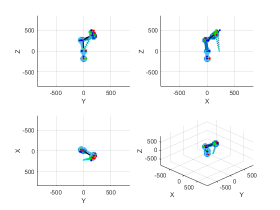

Datei: Invkinematik.m
Beschreibung: Evaluation und Emittlung der Inverse-Kinematik Autor: Chukwunonso Bob-Anp(2)eji Datum: 27-07-2025@11-52
function [th1,th2,th3,th4,th5,th6] = InvKinematik(x, y, z, rmat0_6) % DH Parameter auslesen [alpha, beta, a, d] = DhParams(); % Berechnung der Positionsgebenden Gelenkstellung d.h. th1, th2 und th3 % % TMat = |RotationsMatrix(3x3) Verschiebung(3,1)| % | 0 1 | % % TMat03 = TMat1*TMat2*TMat3 % TMat03 =... % |-sin(th1) -cos(th1)*sin(th2+th3) cos(th1)*cos(th2+th3) cos(th1)*(a(3)*cos(th2+th3)+a(2)*cos(th2)+a(1))| % | cos(th1) -sin(th1)*sin(th2+th3) sin(th1)*cos(th2+th3) sin(th1)*(a(3)*cos(th2+th3)+a(2)*cos(th2)+a(1))| % | 0 cos(th2+th3) cos(th2+th3) a(3)*sin(th2+th3)+a(2)*sin(th2) | % | 0 0 0 1 | % [thr1,thr2,thr3] = Position(x,y,z,3); th1 = ToDeg(thr1); th2 = ToDeg(thr2); th3 = ToDeg(thr3); % Berechnung der Orientierungsgebenden Gelenkstellung d.h. th4, th5 und th6 % RMat0_6 = RMat0_3 * RMat3_6 % (RMat0_3)^-1 * RMat0_6 = (RMat0_3)^-1 * RMat0_3 * RMat3_6 % d.h. % RMat3_6 = (RMat0_3)^-1 * RMat0_6 % % mit TMat0_6 = |RotationsMatrix(3x3) Verschiebung(3x1)| % | 0(1x3) 1 | % % TMat36 = TMat4*TMat5*TMat6 % TMat36 =... % |-cos(th4)*cos(th6)-sin(th4)*cos(th5)*sin(th6) cos(th4)*sin(th6)-sin(th4)*cos(th5)*cos(th6) -sin(th4)*sin(th5) -a(6)*cos(th4)*cos(th6)-a(6)*sin(th4)*cos(th5)*sin(6)-a(5)*sin(th4)*sin(th5)+a(4)*cos(4)| % |-sin(th4)*cos(th6)+cos(th4)*cos(th5)*sin(th6) sin(th4)*sin(th6)+cos(th4)*cos(th5)*cos(th6) cos(th4)*sin(th5) -a(6)*sin(th4)*cos(th6)-a(6)*cos(th4)*cos(th5)*sin(6)-a(5)*cos(th4)*sin(th5)+a(4)*sin(4)| % | sin(th5)*sin(th6) sin(th5)*cos(th6) -cos(th5) a(6)*sin(th5)*sin(th6)-a(5)*cos(th5) | % | 0 0 0 0 | % % Ermittlung der Manipulator Transformations-Matrix entsprechend der % gegebenen Positions-Winkelwerten [tmat0_1,tmat0_2,tmat0_3] = ArmTrans(th1,th2,th3,0,0,0); rmat0_3 = tmat0_3(1:3,1:3); rmat3_6 = (rmat0_3)^-1 * rmat0_6; % Berechnung der Orientierung [thr4,thr5,thr6] = Orientation(rmat3_6, 3); th4 = ToDeg(thr4); th5 = ToDeg(thr5); th6 = ToDeg(thr6); % Ermittlung der Positions Difference zwischen Endeffektor und Gelenk 5 % unterberucksichtigung der Nickung in Acshe 2, 3 oder 5 if (th2 ~= 0 || th3 ~= 0 || th5 ~= 0) % Positions Difference berechnen [posVk,pos5Vk,tmat06v,rmatV0_6] = VrwKinematik(... th1,th2,th3,th4,th5,th6,'k','-+',3,2); % Gelenk 5 entlang der Orientierungs Achse verschieben tmatd = tmat06v*TransFK(0,90,0,0,0)*TransFK(0,0,0,2*a(5),0); PlotEndPoint(tmatd, 50, '-o'); % Berechnung der Positionsgebenden Gelenkstellung d.h. th1, th2 und th3 % unter Berücksichtigung von Achse 56 [thr1,thr2,thr3] = Position(tmatd(1,4),tmatd(2,4),tmatd(3,4),3); th1 = ToDeg(thr1); th2 = ToDeg(thr2); th3 = ToDeg(thr3); % Ermittlung der Manipulator Transformations-Matrix entsprechend der % gegebenen Positions-Winkelwerten [tmat0_1,tmat0_2,tmat0_3] = ArmTrans(th1,th2,th3,0,0,0); rmat0_3 = tmat0_3(1:3,1:3); rmat3_6 = (rmat0_3)^-1 * rmatV0_6; % Berechnung der Orientierung [thr4,thr5,thr6] = Orientation(rmat3_6, 3); th4 = ToDeg(thr4); th5 = ToDeg(thr5); th6 = ToDeg(thr6); end end